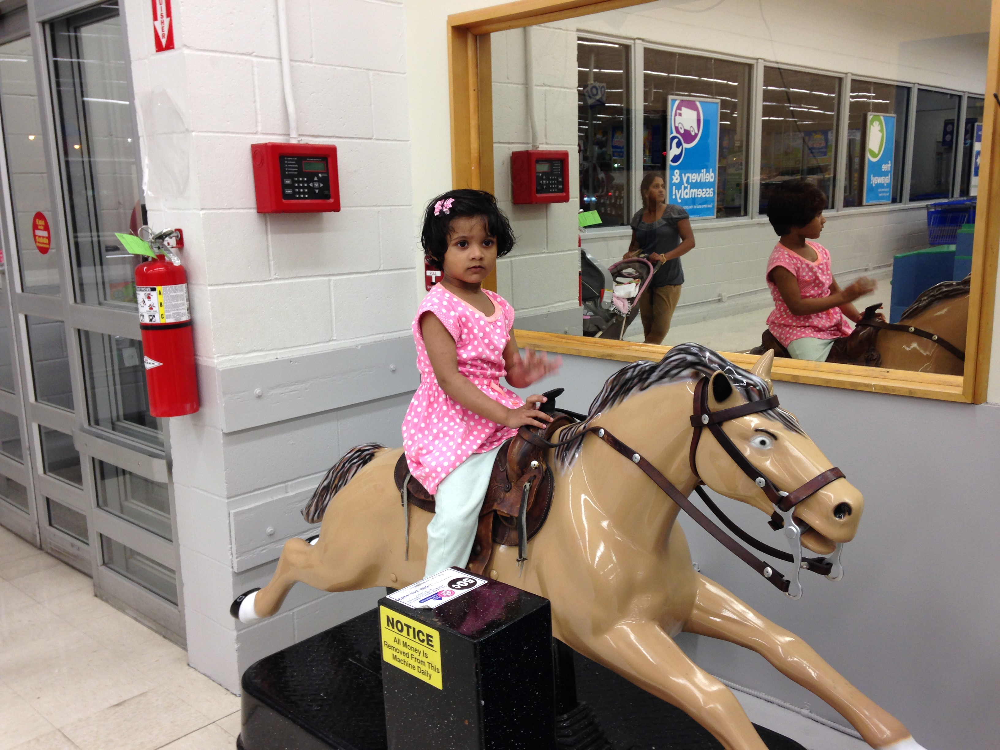

Places you must visit while in Shrewsbury

Dean Park Grill and Pizza
I had visited in May 2021
Haven't been here in years so we decided to stop for lunch. Everything was outstanding. From the moment we entered, right up to our departure, the employees were welcoming and the service was stellar. The owners mom was there, and she was delightful. Making sure all of the guests were looked after and enjoying their experience, this elderly woman (likely into her 80's) moved about this clean and comfortable eatery with a slow and stately confidence, seemingly bursting with pride. But the star of this Shrewsbury pizzaria is the food! We shared the gluten-free pizza with eggplant and it was the best I'd ever had, bar none. The crust was crunchy and delicious, as was the cheesey eggplant toppings. We also split a turkey sub with everything on it. The roll was so soft and the contents were as you would expect, fresh and delicious. I'm not sure why I haven't been there in so long, but suffice it to say... this is now on the 'regular places to dine' list! Bravo Shrewsbury Pizza!

Jump Nation
I had visited 3 months ago
This is well worth the money. My wife, son and I went Tuesday morning at 10am. It's clean and extremely well organized. The owner was FANTASTIC! He made everything so easy and fun. The inflatable selection was amazing; for all ages and variety. We got an hour to play all by ourselves, the owner made sure everything was ready and games powered on, did bubbles a couple times and a cool little laser light show, and then when our time was up he brought our shoes and clothes on our clean cart into a private labeled room and had a balloon our sons favorite color and snacks to choose from. We cannot recommend it enough or say enough good things about the owner and facility.

Dean Park
I had visited in 2018
Lovely park with beautiful pond. Dancing fountains in pond are activated several times a day and on occasion at night with accompanying music. Great area for walking exercises. Tennis and basketball courts. Three well maintained baseball diamonds. Two covered pavilions with plenty of benches for cookouts. Pavilions can be reserved for special occasions. Road and parking fields are plowed in winter and road and grassy areas are cleared of debris. Grass is mowed regularly and leaves are removed in the fall. Just a nice place to just sit on one of benches to relax and enjoy the scenery, I know I do!
Review on Movies

Ok, Parents. Chill.
This movie wasn't supposed to be a Grammy awarding, kids are angels, everything is sunshine and rainbows movie. It's just supposed to be funny and cute and perfect for a family movie night. While I agree there was some mature content, this isn't a G-rated movie and the reviews were right here for you to read BEFORE you watched it, so you shouldn't have been surprised. -The daughter does have some disrespectful attributes, but she's a teenager. They aren't perfect and for a teen to be portrayed as perfect in a movie would be wrong. She looked out for her siblings, resolved her relationship with her mom, and apologized. -The projects they did in school were not meant to make the mom mad because if she had gotten mad, it would have been the same circle all over again that her children were trying to prove with their projects. -the music festival turned out to be a lesson to Katie about life, and I'm glad that was added in there. The guys never disrespected her, and even her friends (Layla) respected her decision not to go into the tent. I really admired Katie's strength when she knew going with the boys was wrong, and she stood up for herself. -As for the ending, the dad grounded them all, what more do you want? Nando did his best to try and stop the party before it got any worse, so it's not his fault. The happy ending was not supposed to show that bad actions can go without consequences, it was supposed to show that no matter what you do, mom and dad will always love you. That was the point of the movie. -Yes Day was really good, my whole family watched it, our youngest being 5, and he laughed the whole time as well as my dad and mom. (I am 15). I loved this movie because it really showed the importance of loosening up and loving your family. If you don't like the mature themes (that are barely there) then I would suggest Finding Nemo, cause you can't hide your kids from this stuff forever, besides, what's the worst that could happen? They might want a Yes Day after watching this?

Good
Parents need to know that Jinxed is a family-friendly movie with pleasant comedy and some very likable themes about self-esteem and tolerating differences. Meg's attempts to undo a family curse has surprising effects on her and those around her, and she's forced to choose between what is right and what is easy. These messages are easy to relate to situations unique to your own kids' experiences, so there will be plenty to talk about after the movie's end. A budding romance yields some flirting and a kiss, and an antagonistic relationship warms once both parties take time to understand each other better. A supportive family unit that weathers ups and downs rounds out this enjoyable movie.

It depends on the maturity of the person, but otherwise very good!
I have watched this over 200 times! This is such a good movie with good role models and honestly good life lessons. It also teaches that when you cheat it's not something to be proud of... your friend/family won't want to hangout with you anymore. It also shows the importance of seatbelts and physical therapy. This also teaches kids not to give up. There is a little bit of flirting and kissing but otherwise doesn't mention anything to do with sex. No swearing in this one. Not very much violence when they do argue it always ends in a dance battle not a physical or verbal fight. No drinking, smoking, or drugs. No consumerism. Hope you enjoy!
My fav Famous personalities

Ariana Grande
Ariana Grande

Ariana Grande-Butera is an American singer and actress. She has received numerous accolades throughout her career, including two Grammy Awards, one Brit Award, two Billboard Music Awards, three American Music Awards, nine MTV Video Music Awards, and 22 Guinness World Records.
CLICK TO LEARN MORE

Elizabeth Gillies
Elizabeth Gillies

Elizabeth Egan Gillies is an American actress and singer. Gillies made her Broadway debut at age 15 in the musical 13, playing the character of Lucy. She made her first television appearance in The Black Donnellys, later starring as Jade West in the Nickelodeon series Victorious.
CLICK TO LEARN MORE
Victoria Justice
Victoria Justice

Victoria Dawn Justice is an American actress and singer. She has received several accolades, which include two Young Artist Awards and nominations for three Imagen Awards, an NAACP Image Award and three Kids Choice Awards.
CLICK TO LEARN MORE

Miley Cyrus
Miley Cyrus

Miley Ray Cyrus is an American singer, songwriter, and actress. Noted for her distinctive raspy voice, her music incorporates elements of varied styles and genres, including pop, country pop, hip hop, experimental, and rock.
CLICK TO LEARN MORE
News About Environment
-
Lego just figured out a way to make it's specialized blocks out of recycled plastic

Today, Lego announced some progress: After years of testing more than 250 different formulations of PET, the type of plastic commonly used in water bottles, the team now has a recycled PET prototype that performs well. After more testing and tweaking, it could eventually be used in production. The team will continue to test the new material for at least a year before deciding whether to begin pilot production. They’ll also continue testing other materials, both for toys and for the company’s packaging; by 2025, Lego plans to phase out single-use plastic in packages.
-
Lego to invest $400 million in sustainability drive

Over the next three years, the LEGO Group will invest $400 million in efforts to meet sustainability targets, educate children and reuse LEGO bricks. The LEGO Group has two ambitious targets – to make all packaging sustainable by 2025 and all products sustainable by 2030. Today, the company is announcing plans to further the sustainability agenda by providing education to children, increase the reuse of bricks and make manufacturing carbon neutral. A $400 million investment over three years will allow the company to make changes, including the trialling of paper bags instead of plastic bags in LEGO set boxes. Further progress will be funded into finding a replacement for ABS, so that all LEGO bricks are made from sustainable materials. Beyond meeting the company’s manufacturing targets, the investment will be used for “inspiring children through learning through play, making the business more circular, and achieving carbon neutral operations.” According to the announcement, this will meet two United Nations Sustainable Development Goals – #4 Quality Education and #12 Responsible Consumption and Production.
-
Illegal gold mining in Amazon Rainforest

Deep in the Amazon rainforest, the Yanomami people are battling an old and elusive enemy -- one they haven't seen since the 1980s. Dressed in traditional headdress, faces decorated with paint, this indigenous community prepares its bows and spears to defend their land against garimpeiros -- illegal gold miners looking for glimmers of gold in this vast and rich territory. The miners, who have set up camps throughout the nearly 24-million acres of the Yanomami reserve -- roughly the size of Portugal -- use the waterways as their thoroughfare, transporting petrol and people, as well as goods to their bases. But it's rarely done quietly, says Fernando, who accuses the miners of encroaching on Yanomami land, intimidating and firing at them. Between May and June the village suffered five attacks. One of them, a half-hour shootout on May 10, was caught on camera.
-
Amazon deforestation and number of fires show how much of it's forest is declining

After a very quiet start in January and February, deforestation in March in the Brazilian Amazon jumped to an estimated 368 km2—greater than 2019 or 2020, both of which were very challenging years. The number of fires detected in the first three months of the year is well below the number detected by this point in 2019 and 2020, perhaps much of the Amazon is wetter than normal this year. Amazon forests absorb and store roughly a tenth of human carbon dioxide emissions each year, but this critical carbon sink is threatened by deforestation and degradation of forest health. Deforestation in the Brazilian Amazon declined by 70% between 2004 and 2014. In recent years, however, deforestation has increased and fires have followed as people burn the trees they’ve recently cut down. Building on the deforestation and fire data released regularly by Brazilian government scientists, we present an analysis of the carbon footprint of this year’s deforestation as well as where deforestation is happening and an analysis of the current climate conditions—key information for identifying fire risk hotspots and shaping solutions.
Books
Dr. Seuss
The more that you read, the more things you will know, the more that you learn, the more places you'll go.
List of Books

The One and Only Ivan
The One and Only Ivan
This stirring and unforgettable novel from renowned author Katherine Applegate celebrates the transformative power of unexpected friendships. Inspired by the true story of a captive gorilla known as Ivan, this illustrated novel is told from the point of view of Ivan himself.
Having spent 27 years behind the glass walls of his enclosure in a shopping mall, Ivan has grown accustomed to humans watching him. He hardly ever thinks about his life in the jungle. Instead, Ivan occupies himself with television, his friends Stella and Bob, and painting. But when he meets Ruby, a baby elephant taken from the wild, he is forced to see their home, and his art, through new eyes.
The One and Only Ivan was hailed as a best book of the year by Kirkus, School Library Journal, and Amazon, demonstrating it is a true classic in the making.
In the tradition of timeless stories like Charlotte's Web and Stuart Little, Katherine Applegate blends humor and poignancy to create Ivan's unforgettable first-person narration in a story of friendship, art, and hope. An author's note depicts the differences between the fictional story and true events.
AMAZON LINK

Sweep: The Story of a Girl and Her Monster
Sweep: The Story of a Girl and Her Monster
It's been five years since the Sweep disappeared. Orphaned and alone, Nan Sparrow had no other choice but to work for a ruthless chimney sweep named Wilkie Crudd. She spends her days sweeping out chimneys. The job is dangerous and thankless, but with her wits and will, Nan has managed to beat the deadly odds time and time again.
When Nan gets stuck in a chimney fire, she fears the end has come. Instead, she wakes to find herself unharmed in an abandoned attic. And she is not alone. Huddled in the corner is a mysterious creature—a golem—made from soot and ash.
Sweep is the story of a girl and her monster. Together, these two outcasts carve out a new life—saving each other in the process. Lyrically told by one of today's most powerful storytellers, Sweep is a heartrending adventure about the everlasting gifts of friendship and wonder.
AMAZON LINK

Smile
Smile
Raina Telgemeier's #1 New York Times bestselling, Eisner Award-winning graphic memoir based on her childhood!
Raina just wants to be a normal sixth grader. But one night after Girl Scouts she trips and falls, severely injuring her two front teeth. What follows is a long and frustrating journey with on-again, off-again braces, surgery, embarrassing headgear, and even a retainer with fake teeth attached. And on top of all that, there's still more to deal with: a major earthquake, boy confusion, and friends who turn out to be not so friendly.
AMAZON LINK

Restart
Restart
Chase's memory just went out the window. Chase doesn't remember falling off the roof. He doesn't remember hitting his head. He doesn't, in fact, remember anything. He wakes up in a hospital room and suddenly has to learn his whole life all over again . . . starting with his own name. He knows he's Chase. But who is Chase? When he gets back to school, he sees that different kids have very different reactions to his return. Some kids treat him like a hero. Some kids are clearly afraid of him. One girl in particular is so angry with him that she pours her frozen yogurt on his head the first chance she gets. Pretty soon, it's not only a question of who Chase is--it's a question of who he was . . . and who he's going to be. From the #1 bestselling author of Swindle and Slacker, Restart is the spectacular story of a kid with a messy past who has to figure out what it means to get a clean start.
AMAZON LINK
My Fav U.S. states

Alabama
The Cotton State
More than 10,000 years ago people came to the area that is now Alabama, some living in Russell Cave. Thousands of years later Native American tribes such as the Cherokee, Chickasaw, Choctaw, and Creek resided in the area. Although many Native Americans were forced to leave Alabama in the 1800s, today some descendants of those tribes still live in the state. The state’s name comes from the Alabama tribe, one of the Native American groups from that area.

Alaska
The Last Frontier
The first people probably came to what is now Alaska about 13,000 years ago. They either walked from what is now Russia, which was connected to Alaska by a patch of land up to 600 miles wide called the Bering Land Bridge, or they sailed. Russians settled here in 1784, and in 1867 the United States purchased the land for two cents an acre. Many thought the harsh habitat was a bad buy until gold was struck in 1872. Alaska became the 49th U.S. state in 1959. Indigenous people including the Inuit, Tlingit, Haida, Aleuts, Athabascans, and Yup'ik still live here. The name "Alaska" is derived from the Aleut "alaxsxaq", meaning "the mainland" or, more literally, "the object towards which the action of the sea is directed".

Arizona
The Grand Canyon State
People lived in the area that’s now Arizona at least 20,000 years ago, before written history. But in the 1200s, this civilization disappeared, probably due to a drought. Much later, Native American tribes such as the Hopi, Zuni, Navajo, and Apache lived on the land, and today 22 tribes still reside on reservations in the state. Spanish explorers first arrived in the 1530s, but through the 1840s, Arizona—as well as present-day California, Utah, Nevada, and New Mexico—was a part of Mexico Arizona’s name may have come from an early Arizona explorer of Spanish descent, Juan Bautista de Anza, who may have called it “place of oaks,” or from Papago Native American words that translate to “place of the young spring.” About five million people visit the state’s nickname each year: the 277-mile-long Grand Canyon.
Coding
The first part...
The HyperText Markup Language, or HTML is the standard markup language for documents designed to be displayed in a web browser. It can be assisted by technologies such as Cascading Style Sheets (CSS) and scripting languages such as JavaScript. ... HTML elements are the building blocks of HTML pages.

The style...
CSS is designed to enable the separation of presentation and content, including layout, colors, and fonts.[3] This separation can improve content accessibility, provide more flexibility and control in the specification of presentation characteristics, enable multiple web pages to share formatting by specifying the relevant CSS in a separate .css file which reduces complexity and repetition in the structural content as well as enabling the .css file to be cached to improve the page load speed between the pages that share the file and its formatting.

The last part...
Alongside HTML and CSS, JavaScript is one of the core technologies of the World Wide Web. Over 97% of websites use it client-side for web page behavior, often incorporating third-party libraries. All major web browsers have a dedicated JavaScript engine to execute the code on the user's device. As a multi-paradigm language, JavaScript supports event-driven, functional, and imperative programming styles. It has application programming interfaces (APIs) for working with text, dates, regular expressions, standard data structures, and the Document Object Model (DOM).
About Me
